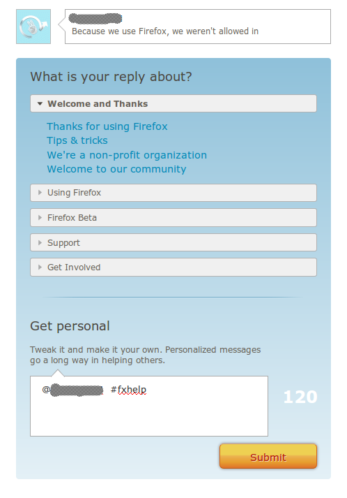

感謝您對「自由軟體鑄造場」的支持與愛護，十多年來「自由軟體鑄造場」受中央研究院支持，並在資訊科學研究所以及資訊科技創新研究中心執行，現已完成階段性的任務。 本網站預計持續維運至 2021年底，網站內容基本上不會再更動。
也紀念我們永遠的朋友 李士傑先生（Shih-Chieh Ilya Li）。
也紀念我們永遠的朋友 李士傑先生（Shih-Chieh Ilya Li）。
源碼新聞  Mozilla 啟用群眾外包網站診斷 Firefox 的疑難雜症
Mozilla 啟用群眾外包網站診斷 Firefox 的疑難雜症
Mozilla 啟用群眾外包網站診斷 Firefox 的疑難雜症
建立日期 2010-10-23 07:52 最近更新在 2010-10-25 19:16
Mozilla 宣佈啟用新的社群支援服務網站 “Army of Awesome“（https://support.mozilla.com/en-US/army-of-awesome）， 幫助解答使用者有關 Firefox 可能有的種種疑難雜症。如果要找出一句成語來形容 Mozilla 這個決定，「眾志成城」想必是最佳首選。 Mozilla 透過群眾外包（crowdsourcing）的方式，讓 Firefox 的資深使用者能協助官方人員解答其他使用者的疑問。這種作法在自由軟體領域裡也許並不是新的創舉，但其大刀闊斧毅然成立專職社群網站的決斷，仍然讓不少評論家表示激賞，並且，Mozilla 的社群支援網站秉持著自由軟體領域專案間協同合作的理念，任何已有 Twitter 帳號的使用者，皆可直接在此網站提出問題或者分享回覆！
Mozilla 社群主管 William Reynolds 在其 Mozilla 部落格（https://blog.mozilla.com/blog/2010/10/11/love-firefox-help-a-fellow-user-out/）表示：「每天都有成千上萬個使用者在他們自己的 Twitter 上提出與 Firefox 相關的問題，我們希望建立一個更簡單的方式，讓提出問題的人可以馬上從其他使用者的回應中得到解答！」
新的支援服務網站，“Army of Awesome“，建立在 Mozilla 既有的社群輔助頁面下。 網站的回應架構圍繞著 Twitter 運作，使用者只需利用既有的 Twitter 帳號 ，即可瀏覽與 Firefox 相關的 Tweets ，這些資訊並不需要使用者手動尋找，也不需要搜尋特定標籤的 Tweets，而回應也是透過 Twitter 。有意願回應問題的人，在 “Army of Awesome“ 網站選擇問題，再透過 Twitter OAuth 登入你的 Twitter 帳號後，就能回應問題了。接下來點選你想回應的 Tweets 就會出現 F&Q 視窗，選擇恰當的回應後，系統就會自動將 Retweet 的內容帶入回應框，使用者只要按下回應按鈕即可送出回應。

“Army of Awesome“ 透過網站的自動化回應機制，省去了傳統方式所需花費的時間成本，這意味著透過 “Army of Awesome“ 幫助別人並不需要耗費過多的精力及時間，而且操作介面相當簡單，只需要了解遇到的是哪一類別的問題，再選擇適合的預設回應，當然，使用者也可以編寫更詳盡的個人回應，或者是進入預設回應的編輯頁面，新增自己對該類問題更精粹的解決方案。
雖然設立新的社群服務網站是很好的構想，但 “Army of Awesome“ 目前的功能表現也並非十全十美，舉例來說，Tweets 的描述內容與 Firefox 的疑難解決其實並無關聯時，像是發言者單純評論 Google Chrome 不如 Firefox 的抱怨 Tweets，這類情形下，解答者就需要花上一些時間手動過濾這些並不需要協助資訊的 Tweet 了。這是因為目前 “Army of Awesome“ 網站上，並沒有自動分析與 Firefox 相關 Tweets 內容的機制，使用者還是需要自行人腦篩選才行。
Reynolds 指出：「Mozilla 社群的成員向來以熱心助人著稱，而這個特質也是 Firefox 之所以可以不斷正向發展的重要元素。就網站開設者的立場來說，我們不限定為參與者非得是 Firefox 操作上的專家才能加入“Army of Awesome“，但是當然，我們非常赤忱的期待這類的專家們可以加入這個網站的運作，一起共襄盛舉！」
相關網址：
1. Mozilla 啟用 Army of Awesome 支援服務網站
https://www.h-online.com/open/news/item/Mozilla-launches-Army-of-Awesome-community-support-programme-1105679.html
2. Mozilla 啟用 Firefox 支援服務群組
https://www.webuser.co.uk/news/top-stories/502662/mozilla-launches-firefox-support-group
3. 加入 Mozilla’s Army of Awesome，幫助 Twitterers 解答 Firefox 問題
https://news.softpedia.com/news/Join-Mozilla-s-Army-of-Awesome-to-Help-Twitterers-with-Firefox-Problems-160310.shtml
您也許有興趣閱讀以下文章:
- 困頓中求轉進 - BlackBerry 與 Mozilla 持續合作 Peach Fuzzing - 2013-08-26
- Mozilla 正式發布 Firefox OS 開發用手機 - 2013-01-28
- Mozilla B2G 改名為 Firefox OS，將於明年初發售 - 2012-07-09
- Mozilla 推出網頁遊戲 BrowserQuest - 2012-04-06
- Mozilla 考慮讓行動版 Firefox 支援 H.264 視頻編解碼器 - 2012-03-22
- Mozilla 釋出 MPL 2.0 版 - 2012-01-16
- Mozilla 釋出以 Bing 為預設搜尋引擎的 Firefox 版本 - 2011-11-07
- Mozilla 工作小組建議為企業用戶減緩釋出時程 - 2011-10-03
- Mozilla 快速釋出週期引發批評 前志願者指臭蟲回應緩慢 - 2011-09-18
- Mozilla 宣佈以 Web 技術為基礎的行動作業系統 - 2011-07-25
- 經理人惹惱 Firefox 企業用戶 Mozilla 部落格發文平息怒火 - 2011-07-04
- Mozilla 拒絕美國政府要求移除 Firefox 附加元件 - 2011-05-11
- 【社群採訪】- 創意十足的 Mozilla Firefox 社群 - Mozilla Taiwan - 2011-03-07
- Mozilla 營收成長 34% - 2010-12-09
- Mozilla 釋出新的 JavaScript 效能測試標竿 Kraken - 2010-09-22
- Mozilla 釋出 Firefox 行動版本 Fennec Alpha - 2010-09-08
- Mozilla 雲端開發環境 Bespin 改名 Skywriter - 2010-09-06
- 一窺 Mozilla Firefox 擴充套件開發 - 2009-04-07
- Firefox 延伸套件比賽落幕 Firefox 為 Mozilla 賺進百萬美元 - 2006-03-10
- Mozilla 行動裝置瀏覽器 Minimo 釋出預覽版本 - 2005-07-22
- Firefox 下載達 7500 萬 Mozilla 版圖人力同擴張 - 2005-07-19
- Mozilla 行銷網站 SpreadFirefox.com 遭入侵 - 2005-07-16
- Mozilla.org 宣佈成立基金會 持續 Mozilla 專案發展 - 2003-07-21
專欄總覽


自由軟體鑄造場 製作 最佳瀏覽狀態：IE7或Firefox2.0以上 (建議使用Firefox) ‧ 解析度1024*768
E-Mail：contact@openfoundry.org Address：台北市南港區研究院路2段128號 中央研究院資訊科學研究所 . 隱私權條款. 使用條款
E-Mail：contact@openfoundry.org Address：台北市南港區研究院路2段128號 中央研究院資訊科學研究所 . 隱私權條款. 使用條款